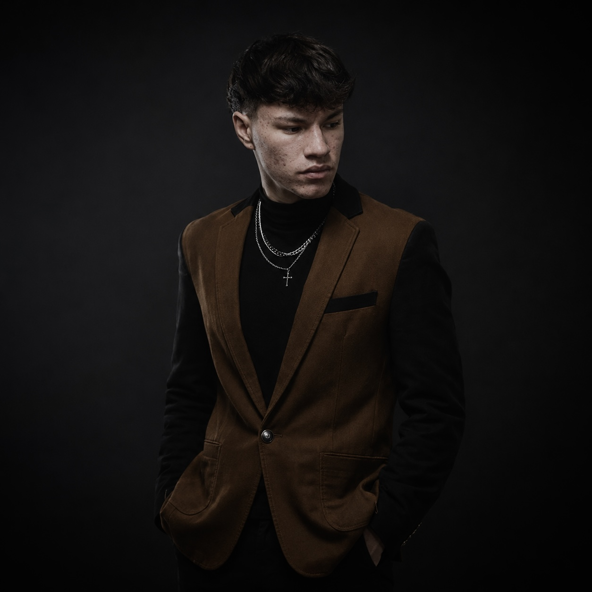
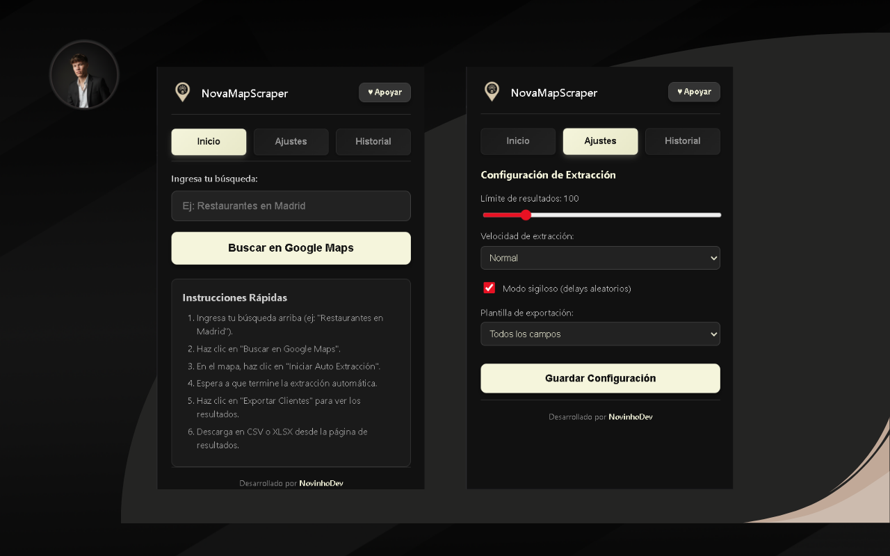

Alexis Jara
Soy Alexis Jara, aunque en internet me conocen como NovinhoDev.
Desde muy pequeño sentí una conexión especial con la tecnología. Crecí en un entorno donde el avance tecnológico era constante, en gran parte gracias a mi padre, quien es técnico y con quien pasaba gran parte de mi tiempo. Él dedicaba sus momentos libres a la robótica, y fue ahí donde nació mi curiosidad por crear.
Siempre fui alguien inquieto, con una necesidad constante de construir cosas. Desarmaba dispositivos electrónicos solo para entender cómo funcionaban y, en muchos casos, intentar crear los míos propios. Experimentar, aprender y crear no solo era un hobby, era mi forma de ver el mundo.
Con el tiempo entendí que existía algo aún más profundo que lo físico. Un espacio donde las únicas limitaciones eran las ideas. Así fue como descubrí la programación: un universo donde puedes construir prácticamente cualquier cosa desde cero. Ese fue el punto de quiebre que transformó mi pasión.
A los 15 años obtuve una beca para estudiar de forma online en EGG Cooperation, una experiencia que marcó un antes y un después en mi camino. Allí aprendí los fundamentos, la lógica de programación y, sobre todo, confirmé la enorme pasión que siento por este mundo.
Paralelamente, comenzó a interesarme otro campo que muchas veces es malinterpretado: el hacking. Lejos de la percepción negativa que suele tener, descubrí el hacking ético como una disciplina enfocada en la seguridad y el conocimiento profundo de los sistemas. Aprendí a manejar la línea de comandos, sistemas Linux y eventualmente trabajé con Kali Linux, especializándome en entornos de pentesting.
Hoy en día, una de mis principales áreas de enfoque es el desarrollo web. Gracias a mi experiencia en diseño gráfico, he logrado integrar estética y funcionalidad, creando interfaces limpias, intuitivas y bien pensadas. El diseño UI/UX es una parte fundamental de mi trabajo, y esta misma página es un reflejo de ello.
Podría decirse que soy una persona “todoterreno”. A lo largo de mi vida también adquirí experiencia en distintas áreas como reparación de electrodomésticos, electricidad, carpintería, mecánica y más. Todo esto ha aportado a mi forma de pensar: resolver problemas, adaptarme y crear soluciones desde distintos ángulos.
Actualmente me considero alguien en constante evolución, con experiencia en desarrollo de software, desarrollo web, pentesting, diseño y un área que destaca especialmente en mí: el OSINT (Open Source Intelligence). Me apasiona investigar y analizar información, entendiendo a fondo organizaciones o personas a partir de datos públicos. Esto es algo que algunos amigos cercanos lo confirman con un poco de humor, ya que a veces dicen que soy "un poco acosador", pero en el buen sentido. A la primera semana me llama la atención una organización o persona, y en la siguiente semana ya tengo bastante información sobre esa organización o persona. Pero es un vicio sano, lo juro.
No me considero alguien que ya lo sabe todo, ni mucho menos. Sé que aún me queda un largo camino por recorrer. Mi objetivo es especializarme profundamente en un área, pero mientras tanto, sigo explorando, aprendiendo y construyendo.
Si llegaste hasta aquí, realmente te lo agradezco. Eso significa que te tomaste el tiempo de conocer mi historia, y para mí, eso ya tiene mucho valor.
El origen de la pasión
Toda gran pasión tiene un origen, y la mía nació desde la curiosidad. Desde pequeño no solo quería usar la tecnología, quería entenderla. Desarmar dispositivos, experimentar y crear se volvió parte de mi día a día, hasta que descubrí un mundo donde las únicas limitaciones eran las ideas: la programación.
Desde entonces, he estado comprometido en perfeccionar no solo mis habilidades técnicas, sino también mi entendimiento de la experiencia humana frente a la pantalla.
"La tecnología es mejor cuando une a la gente. Diseñar con empatía es la única forma de crear software que trascienda."
Esta filosofía me guía en cada proyecto que asumo, asegurando que cada línea de código tenga un propósito claro.

Buscando el balance perfecto
Para mí, el desarrollo web no se trata de elegir entre la estética y el rendimiento. Los sitios más memorables logran un equilibrio perfecto entre un diseño visual exquisito y una arquitectura de código rápida y limpia.
Me especializo en Front-End, pero mantengo una comprensión profunda de cómo se conectan los datos y la lógica en el backend para dar soporte a interfaces sumamente fluidas.
Mi Trayectoria
Desarrollador Front-End Independiente
Creación de sitios web premium y aplicaciones a medida para clientes locales e internacionales. Enfoque exclusivo en rendimiento y animaciones interactivas modernas.
Especialización en UI/UX
Consolidación del stack moderno de interfaces dinámicas, implementando patrones de diseño avanzados y flujos de trabajo eficientes para startups.
El Primer Píxel
Inicio en el mundo del desarrollo web autodidacta. Primeros proyectos escolares y personales usando lenguajes base y maquetación responsiva.
Principios Fundacionales
Estética Funcional
El diseño visual no es solo adorno; debe guiar al usuario intuitivamente. Cada color y animación tiene un propósito claro.
Código Limpio
Escribo código modular, semántico y fácil de mantener. Tu sitio no solo se verá bien ahora, sino que crecerá contigo mañana.
Empatía y Foco
Escucho activamente y me sumerjo en los objetivos de tu negocio para construir la mejor versión de tu visión digital.